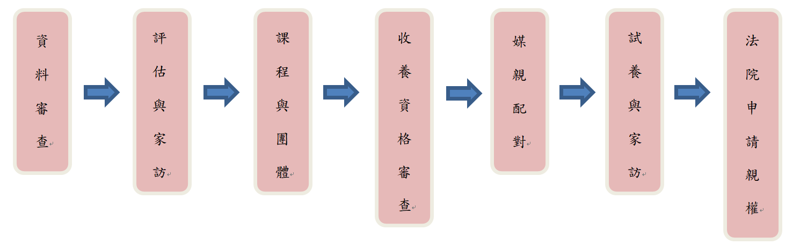

常見問題
Q1：同志現在可以結婚嗎？
可以，於2017年5月24日由司法院祕書長呂太郎公布合憲或違憲解釋文，以釋字748號解釋宣布結論，大法官最終認為，我國現行法律未保障同婚已屬違憲，應以法律保障同性婚。所以兩年內若立法機關未修法，兩年後(2019年5月24日)就可以至戶政事務所登記結婚。
Q2：同志可以收養小孩嗎？
可以，在收養程序上，不管是單獨收養或共同收養，原則上收養人必須與被收養人或被收養人的法定代理人簽立收養契約（如被收養人未滿七歲，而無法定代理人者，不須訂立收養契約），之後向法院提出請求認可這個收養程序，在法院裁定認可收養後，整個收養程序才算是完成。
Q3：如何收養小孩？
可以向
兒童及少年領養中心 申請

（以上所需時間至少超過一年外，申請收養需花費
7~14萬。）
Q4：同志的伴侶可以簽手術同意書嗎？
可以，根據《醫療法》第六十三條、六十四條，實施手術或侵入性檢查前，應向病人法定代理人、配偶、親屬或關係人說明風險，並經其同意，簽具手術或麻醉同意書；病人為未成年或無法親自簽具者，得由法定代理人、配偶、親屬或關係人簽具。
所謂「關係人」，衛福部在九十三年十月公告「醫療機構施行手術及麻醉告知暨取得病人同意指導原則」，說明是與病人有特別密切關係，如同居人、摯友等。衛福部官員說明，「關係人」並無男、女性別概念，不論同志是否可合法登記，都無損同志對於另一半的醫療同意權。
Q5：同志比較容易得愛滋病？
沒有這種說法。愛滋病毒是經由體液交換傳染，包括輸血、打針、不安全性行為等等，與同志無關。
Q6：同性伴侶註記後，身分證欄位會變嗎？
亞洲首部同婚專法《司法院釋字第748號解釋施行法》2019年2月21日送出行政院會，草案共27條條文，明訂2019年5月24日施行，內容包括婚姻要件、守貞責任，並准繼親收養，可享財產繼承權、監護權、醫療權，但並未涉及跨國婚。國民黨立委許毓仁27日質詢內政部長徐國勇時提問身分證上的欄位該如何登記，徐國勇表示，目前還在考慮中，但傾向配偶欄不變，父、母欄位改成「父、養父」或「母、養母」。
更多諮詢網站